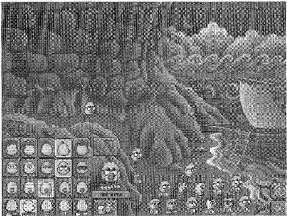
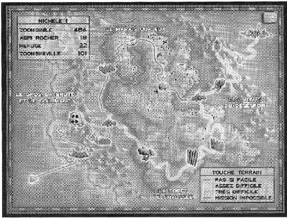
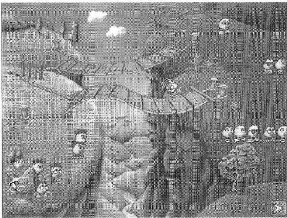
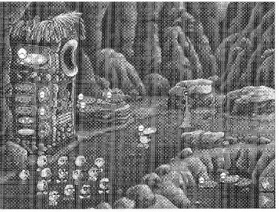
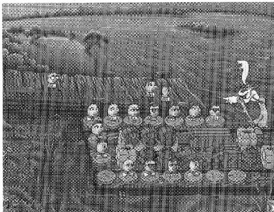

Cette page reprend, en les réécrivant, les parties du manuel français de 1996 utiles pour jouer. L'installation (Windows, Macintosh), le dépannage et l'assistance technique sont omis. Les noms des lieux, des épreuves et des boutons sont ceux du jeu.
L'histoire
L'Odyssée des Zoombinis est un jeu de logique pour enfants, édité par Broderbund avec le TERC en 1996. Vous guidez de petits personnages bleus, les Zoombinis, de leur île jusqu'à une terre promise.
Les Zoombinis vivaient heureux sur l'île de Zoombinîle. Ils se ressemblent sans être pareils (yeux, nez, cheveux, pieds), ce qui n'avait jamais compté pour eux. Ils y fabriquaient de petits objets utiles, connus dans le monde entier. Puis les Boursouflos sont arrivés, en proposant d'aider les affaires : ils ont pris le contrôle de l'île, détourné les bénéfices, supprimé les vacances et imposé des heures supplémentaires. Les Zoombinis ont décidé de partir, loin.
Vous seul pouvez les aider. Il faut les conduire de Zoombinîle à une terre promise, par des régions étranges : mares peuplées de Trépidants Têtards Tatoués, bac du ronchon Père Mathieu, pizzosaures arboricoles, forêts infestées de Nizibooms, cavernes des Monts du Désespoir. À chaque étape, une épreuve à réussir pour continuer. Des centaines de Zoombinis attendent d'être délivrés. En cas de blocage, dit le manuel, les célèbres explorateurs Paul et Émile Victotor ont laissé des paroles de sagesse : ce sont les petites phrases en italique en tête de chaque épreuve.
Pour commencer
Le voyage en bref
- Sur Zoombinîle, on recrute une équipe de 16 Zoombinis.
- On choisit une piste à la sortie du camp de base : le Gros, la Brute et le Gourmand, puis le Marais Quajeux (piste nord) ou la Forêt de Chaussée (piste sud), puis les Monts du Désespoir.
- Chaque piste compte des épreuves à réussir. Les Zoombinis qui échouent ne sont pas perdus pour toujours : on les retrouve plus tard.
- Les survivants arrivent à Zoombiniville, où ils fondent leur nouvelle ville. On repart alors chercher une autre équipe.
Deux boutons à connaître
- Carte (l'icône de parchemin) : présente à chaque épreuve, à Zoombinîle, dans les camps de base et à Zoombiniville. Elle montre où sont les Zoombinis (voir La carte).
- Avance (la flèche verte, en bas à droite de chaque écran) : mène à l'étape suivante du voyage.
Les quatre niveaux de difficulté
Dans l'ordre : Pas si facile (vert), Assez difficile (jaune), Très difficile (orange) et Mission impossible (rouge).
- Le niveau monte tout seul : quand une équipe de 16 Zoombinis a réussi les trois épreuves d'une piste, la prochaine visite de cette piste se fait au niveau supérieur.
- L'écran de jeu ne change pas forcément, mais les épreuves deviennent plus dures à chaque niveau (règles plus complexes, droit à l'erreur plus faible, aides en moins).
- Sur les écrans de transition, la piste est colorée selon le niveau. La « touche terrain » de la carte rappelle les niveaux déjà franchis.
- Un niveau terminé ne se rejoue pas épreuve par épreuve, sauf en mode Entraînement (voir Options et menus).
Dans cette version : le jeu est en français. Les parties sont enregistrées dans le navigateur de cet appareil (voir Options et menus).
Zoombinîle
But : recruter une équipe de 16 Zoombinis avant de partir. Ce n'est pas une épreuve.

- Dans le cadre en bas à gauche, cliquez sur les caractéristiques (yeux, nez, pieds, cheveux) jusqu'à obtenir l'apparence voulue. Chaque Zoombini a une caractéristique de chacun de ces quatre attributs. Pour un tirage au hasard, cliquez sur le dé sous le Zoombini.
- Cliquez sur la flèche verte qui s'allume au-dessus de lui : il sort de sa caverne.
- À 16 Zoombinis, une flèche verte s'allume en bas à droite : c'est Avance, qui lance l'aventure.
- Il faut 16 Zoombinis pour commencer chaque voyage. Deux Zoombinis seulement peuvent avoir exactement les mêmes caractéristiques au cours d'une partie.
- Recrutement automatique : Maj + clic sur le dé fait sortir les Zoombinis tout seuls, jusqu'à former (ou compléter) une équipe de 16.
- Un Zoombini sorti peut être renvoyé dans sa caverne en en choisissant un autre aux caractéristiques différentes.
Choisir son équipe compte : les vingt caractéristiques forment quatre attributs (cheveux, yeux, nez, pieds), et la structure de toutes les épreuves en découle. On peut composer une équipe variée, ou avec une ou deux caractéristiques très répandues, ou avec des jumeaux : des personnages très semblables facilitent parfois les épreuves.
Zoombinis errants : un Zoombini qui échoue à une épreuve se perd un moment dans la nature, mais il retrouve le dernier refuge. En passant par un camp de base ou par Zoombinîle, vous reverrez des visages familiers : ce sont eux, prêts à repartir.
La carte

La carte garde la trace du voyage. Quand les Zoombinis quittent un endroit, la zone s'illumine à la couleur du niveau de jeu : on voit les étapes franchies, pas celles à venir.
- Les pistes : quatre pistes de trois épreuves, nommées sur la carte : le Gros, la Brute et le Gourmand, le Marais Quajeux, la Forêt de Chaussée et les Monts du Désespoir.
- Touche terrain (en bas à droite) : les niveaux de jeu déjà franchis.
- Légende du jeu (en haut à gauche) : le nom de la partie en titre (par défaut « Partie avec ton nom ») ; à droite du nom de chaque région, le nombre de Zoombinis qui s'y trouvent. Pour renommer la partie : menu Options, Enregistrer partie.
- Menu Options : le petit bouton gris en haut à droite (voir Options et menus).
Abandonner une épreuve : l'icône de la carte est à côté de la flèche verte au début de chaque épreuve. Un clic dessus quitte l'épreuve, mais on ne peut pas y revenir directement : on choisit alors entre Zoombinîle, un camp de base ou Zoombiniville. Les Zoombinis sont perdus un moment, puis retrouvés à l'Abri du Rocher, au Refuge de Grozarbre ou à Zoombinîle. Hors mode Entraînement, ce sont les seuls endroits accessibles depuis la carte.
Le Gros, la Brute et le Gourmand
La première piste : après une grosse tempête en mer, les Zoombinis touchent la terre ferme. Les trois épreuves sont du type « devinez la règle » : chacune cache une exigence secrète à déduire.
Les Gorges Allergiques

But : faire traverser tous les Zoombinis par l'une ou l'autre des deux passerelles qui enjambent les gorges.
- Cliquez sur un Zoombini et posez-le à gauche d'une passerelle, sur le point lumineux. Plusieurs Zoombinis peuvent traverser en même temps.
- Les gorges sont allergiques à certaines caractéristiques : un éternuement renvoie le Zoombini à son point de départ, et un piquet de la passerelle tombe à chaque fois, ce qui réduit les chances des suivants. À vous de deviner ce qui déplaît aux gorges.
- Quand tous ont traversé, cliquez sur la flèche verte.
Pour raisonner : « seuls ceux qui ont le nez rouge passent » regroupe par une caractéristique ; « seuls ceux qui n'ont pas le nez rouge » passe par l'absence d'une caractéristique. Aux niveaux Très difficile et Mission impossible, les règles sont plus complexes et la marge d'erreur est très faible.
Les Grottes de Passe-Clos
But : faire entrer chaque Zoombini dans l'une des quatre grottes, gardées par des gardiens de pierre capricieux : Lazuli et Rocco, Caillasse et Gravasse.
- Cliquez sur un Zoombini et posez-le sur le point lumineux qui marque le début d'une voie d'accès. Il grimpe vers l'entrée, sauf si un garde en décide autrement.
- Un Zoombini refusé par un garde sera peut-être accepté par un autre, mais les essais sont limités : ensuite un éboulement bloque les chemins (les gravats seront déblayés pour le groupe suivant).
- Il faut trouver la règle des gardes. Les deux gros rochers du centre et les deux petits des côtés trient chacun selon une règle différente. Les gardes changent leurs critères d'un groupe à l'autre.
- Cliquez sur la flèche verte : ceux qui sont entrés continuent le voyage.
Conseil : même au niveau Pas si facile, c'est ardu. Tâtonnez d'abord, en évitant de faire refuser deux fois un même Zoombini par le même garde. Un attribut compte pour les gros rochers, un autre pour les petits : déduisez-les des refus.
La Hutte à Pizza

But : composer la pizza qui plaît à Vésuvio, un pizzosaure arboricole obsédé par la pizza, mais très difficile sur la garniture.
- Sur la Machinapizza, cliquez sur les boutons de garnitures pour composer la pizza, puis sur l'image de la pizza, au-dessus des ingrédients, pour lancer la machine.
- Une pizza avec un ingrédient qui ne convient pas est jetée dans la fosse face au pizzosaure. Une pizza incomplète, qui ne contient que des garnitures qu'il aime, est mise en réserve sur les rochers derrière lui.
- Quand Vésuvio dévore sa pizza idéale, cliquez sur la flèche verte.
Aux niveaux supérieurs : Vésuvio est rejoint par Gorgonzo et Lapinaille, aux goûts aussi arrêtés (la pizza qui ravit l'un dégoûte l'autre). En plus de la pizza, il faut préparer un nappage pour la glace avec les icônes de coupes glacées, à droite de la machine. En Mission impossible, regardez bien les pizzas déjà dans la fosse : ce sont des indices précieux.
Pour raisonner : les garnitures sont des choix oui/non combinables à volonté, contrairement aux caractéristiques des Zoombinis. Tenter sa chance ne paie pas toujours : proposez des pizzas qui, même refusées, apprennent le plus.
Camp de base : l'Abri du Rocher
Un campement avec une bonne soupe chaude : une étape de repos et un point de ralliement pour les Zoombinis égarés, qui attendent que vous veniez les chercher. Cliquez sur les barres de chaque côté de l'abri pour faire défiler les troupes. L'abri peut accueillir autant de Zoombinis qu'on en amène.
- Pour repartir, placez 16 Zoombinis sur les pavés du chemin, puis cliquez sur l'une des flèches vertes.
- Pas assez de Zoombinis ? Cliquez sur l'icône de la carte (entre les flèches vertes), puis sur Zoombinîle, recrutez-en d'autres et refaites le voyage. Les Zoombinis restés à l'abri sont toujours là : l'équipe peut mélanger anciens et nouveaux.
Le Marais Quajeux (piste nord)
En prenant la piste du haut à partir de l'Abri du Rocher, les Zoombinis traversent une région verte et luxuriante, faite de ruisseaux et de marais, jusqu'à un large fleuve qu'on ne passe qu'en empruntant le bac du Père Mathieu. Toutes les épreuves de cette piste jouent sur les similitudes entre les objets et sur leur agencement, pour que les voisins aient des points communs.
Le Bac du Père Mathieu

But : installer chaque Zoombini sur un siège du bac, de sorte que deux voisins aient toujours une caractéristique en commun.
- Le Père Mathieu est d'un abord peu aimable, mais de bonne volonté : il proteste dès qu'un Zoombini n'est pas à côté du bon voisin.
- Placez chacun sur un siège en bois. Vous pouvez les déplacer autant de fois qu'il le faut.
- Quand tous ont leur place définitive, cliquez sur la flèche verte.
Pour raisonner : le tâtonnement peut suffire à Pas si facile ; ensuite, il faut être méthodique, et examiner quelles caractéristiques sont communes et lesquelles sont rares.
La Mare des Trépidants Têtards Tatoués
But : faire traverser le marais aux Zoombinis, à dos de têtard, en suivant les nénuphars de même couleur, de même fleur ou de même feuille.
- Cliquez sur un têtard tatoué et posez-le sur le nénuphar qui convient, dans la colonne de gauche. Le Zoombini saute sur son dos. Si le nénuphar est le bon, le têtard rejoint l'autre berge en suivant la piste de sa forme, puis revient à la case départ.
- Un même têtard ne peut faire que deux traversées. Posé sur le mauvais nénuphar, il reste coincé et tourne en rond avec son cavalier.
- Aux niveaux supérieurs : Gontran, le Maître des Marais, propose sa baguette magique. Cliquez sur la baguette, puis sur le nénuphar à déplacer, puis sur celui qui doit prendre sa place : les deux sont échangés. La poudre magique n'est pas inépuisable, et un échange peut couper un chemin existant. Les Crabouilles, crabes violets mutants, viennent aussi barrer la route.
- Quand tout le groupe a traversé, cliquez sur la flèche verte.
La Fosse de Monte-Pierre
But : placer les Zoombinis sur les dalles, au pied d'un mur abrupt, pour déclencher le mécanisme qui les hisse en haut.
- Les dessins gravés entre les dalles indiquent les points communs que doivent avoir deux Zoombinis voisins.
- Quand deux Zoombinis sont bien placés, la pierre devient rouge : le contact électrique est fait.
- Quand tous ont trouvé leur combinaison, cliquez sur la flèche verte.
Pour raisonner : contrairement au Père Mathieu, ici chaque emplacement exige une similitude précise. Il est plus facile de regrouper d'abord les Zoombinis qui ont des caractéristiques en commun. Aux niveaux Très difficile et Mission impossible, des Zoombinis non adjacents peuvent être connectés : ce qui compte est le plus petit nombre de liaisons entre eux, pas la distance.
La Forêt de Chaussée (piste sud)
La piste du bas, à partir de l'Abri du Rocher, mène sous des arbres aux branches tordues, puis jusqu'à une muraille. Les méchants Nizibooms ne sont pas loin. Chaque attribut des Zoombinis (cheveux, yeux, nez, pieds) y devient une direction de l'espace : on range les Zoombinis selon leurs caractéristiques, comme dans un graphique.
Les Nizibooms
But : faire déguerpir les Nizibooms perchés sur la branche.
- Les Nizibooms, cousins mutants des Zoombinis (chassés de Zoombinîle pour leurs mauvaises manières), ressemblent comme des frères aux Zoombinis. Le lien de parenté entre un Zoombini et un Niziboom déclenche la poursuite.
- Cliquez sur un Zoombini et placez-le sur le chemin. Relâchez le bouton quand la tache lumineuse apparaît. À vous de trouver quel lien de parenté chasse un Niziboom.
- Quand la voie est libre, cliquez sur la flèche verte.
Pour raisonner : il s'agit de trouver la correspondance systématique entre les caractéristiques des Zoombinis et celles des Nizibooms. Aux niveaux supérieurs, le droit à l'erreur est limité : utilisez tous les indices.
L'Hôtel du Temps Compté
But : trouver à chaque Zoombini une chambre pour la nuit, avant la tombée de la nuit.
- Ursula, l'hôtelière, est sur le point de fermer. Cliquez sur un Zoombini et posez-le sur un rebord de fenêtre. Si le rebord se dérobe, choisissez une autre chambre.
- Surveillez l'horloge : à chaque erreur, le crépuscule tombe plus vite.
- Qui se ressemble s'assemble : au niveau Pas si facile, une seule dimension (par exemple tous les cheveux en queue de cheval au même étage) ; deux dimensions à Assez difficile et Très difficile (étage et colonne, avec des chambres condamnées à Très difficile) ; un système en trois dimensions à Mission impossible.
La Muraille de Signes
But : lancer des boules de boue sur les cibles de la muraille pour catapulter les Zoombinis de l'autre côté.
- La Catapultaboue fabrique des boules que vous colorez et marquez d'un signe avec des tampons. Une boule qui touche une cible envoie un, deux ou trois Zoombinis de l'autre côté.
- Cliquez sur un bouton de la rangée du bas (couleur) et sur un bouton de la rangée du haut (forme), puis sur la flèche lumineuse à droite des boutons. Observez où la boule atterrit pour comprendre la logique de la muraille.
- Le stock de boue est limité : pas de gaspillage. Aux niveaux supérieurs, une rangée de boutons de plus colore la forme gravée au centre de la boule.
- Quand tous ont franchi la muraille, cliquez sur la flèche verte.
Pour raisonner : à Pas si facile, la muraille est proche de l'hôtel (une correspondance entre caractéristiques et position). Ensuite s'ajoutent des permutations : un même schéma de transformation, qu'on repère en regardant où les boules tombent.
Camp de base : le Refuge de Grozarbre
Encore un coin tranquille pour reprendre des forces avant l'épreuve la plus périlleuse. Alignez vos 16 Zoombinis sur les pierres au pied de l'arbre et cliquez sur la flèche verte. Si l'équipe n'est pas complète, cliquez sur l'icône de la carte, choisissez Zoombinîle ou l'Abri du Rocher, recrutez et refaites le voyage.
Les Monts du Désespoir (le voyage sous terre)
Dernière partie du périple : tunnels et cavernes. Un faux pas, et un Zoombini peut disparaître dans le puits de mine. Mais les Zoombinis retombent toujours sur leurs pieds.
La Tanière du Sphinx
But : ranger les Zoombinis le long de la piste sinueuse, dans « l'ordre de tri » du sphinx.
- Cliquez sur un Zoombini et posez-le sur une dalle de la piste. S'il est bien placé, il y reste. Sinon, un tunnel secret l'aspire et le remet à la bonne place.
- Les essais sont limités : ensuite la porte de sortie s'effondre. Observez les symboles gravés sur le mur : ce sont des indices.
- À Mission impossible, il n'y a plus aucune inscription : vous devez deviner seul la loi du sphinx (avec un tri primaire et un tri secondaire).
- Quand vous êtes prêt, cliquez sur la flèche verte.
Pour raisonner : le nombre de dalles vides sur une portion de la piste, comparé au nombre de Zoombinis qui ont telle caractéristique, peut donner la solution.
Le Piège de Cristal
But : faire descendre chaque Zoombini le long du rail et passer de l'autre côté du miroir de cristal.
- Placez un Zoombini sur le chariot, sous les saillies rocheuses. Choisissez une représentation de Zoombini en haut à droite et posez-la dans le cristal le plus à droite, puis tirez la manette sous le chariot. Si le Zoombini ressemble à l'image reflétée, il arrive sans encombre en bas du rail.
- Cliquez sur le levier pour réinitialiser les représentations et recommencez pour chaque Zoombini.
- À Assez difficile, des cristaux intermédiaires (yeux, cheveux…) modifient l'image projetée sur le miroir central. À Très difficile et Mission impossible, vous cliquez sur ces panneaux pour les poser de part et d'autre du miroir ; certains alternent entre cinq variantes dans un ordre fixe.
- Quand tous sont passés, cliquez sur la flèche verte.
Pour raisonner : le cristal central est comme un signe égal, les panneaux des transformations. Pour trouver la solution, il faut inverser ou combiner les transformations.
Le Gouffre des Véhibules
But : faire passer les Zoombinis de l'autre côté d'un gouffre sans fond, dans des bulles qui suivent un trajet semé de pièges et d'accélérateurs.
- Cliquez sur un Zoombini et posez-le, au bord du précipice, sur la petite flèche qui s'allume quand vous approchez. Une bulle l'emporte selon un trajet complexe, mais logique.
- Observez comment la trajectoire réagit aux flèches et aux dessins du quadrillage au-dessus du gouffre : ces symboles guident chaque Zoombini selon ses caractéristiques. Le bon Zoombini sur la bonne plate-forme de départ passe sans encombre.
- Une fois le gouffre franchi, cliquez sur la flèche verte pour sortir des Monts du Désespoir.
Pour raisonner : même à Mission impossible, le comportement des objets reste cohérent et prévisible : on peut le déduire en observant la répartition des caractéristiques dans le groupe.
Zoombiniville
La terre promise : une région verdoyante et fertile où les Zoombinis bâtissent maisons, parcs, écoles (où l'on enseigne la culture zoombinesque) et même des piscines. À mesure que de nouvelles équipes arrivent, l'endroit devient une petite ville prospère. Cliquez à gauche ou à droite de l'écran pour en voir davantage.
- Si vous avez conduit une équipe complète de 16 Zoombinis à bon port, un monument est érigé en l'honneur de leur courage. Cliquez sur la petite plaque de chaque bâtiment pour lire les exploits des Zoombinis.
- Et ensuite ? Retourner chercher d'autres Zoombinis : cliquez sur l'icône de la carte pour revenir à Zoombinîle ou dans un camp de base, et recrutez une nouvelle équipe. Verrez-vous s'élever les 16 monuments ?
Options et menus
Le menu Options s'ouvre avec la touche ? (de n'importe où dans le jeu), ou depuis la carte avec le petit bouton gris en haut à droite. Il regroupe les actions de partie et les réglages ; chacun a aussi son raccourci clavier.
Dans cette version : le menu s'ouvre avec la touche / (ou ?), ou, sur écran tactile, avec le bouton Menu affiché sur l'écran de jeu.
| Option | Raccourci du manuel | Effet |
|---|---|---|
| Nouvelle partie | Ctrl + N | Commence une partie neuve (le jeu démarre toujours sur Zoombinîle ; dès qu'une partie existe, un écran propose Nouvelle partie ou Charger partie). |
| Charger partie | Ctrl + C | Reprend une partie enregistrée. |
| Enregistrer partie | Ctrl + S | À tout moment : tapez un nom puis cliquez sur Enregistrer. Le nom s'affiche en haut à gauche de la carte. |
| Quitter | Ctrl + Q | Quitte le jeu ; si la partie n'a pas été enregistrée, le jeu propose de le faire d'abord. |
| Dialogues et effets | Ctrl + V | Active ou coupe les dialogues des personnages, les effets sonores des épreuves et les voix des Zoombinis. |
| Musique de fond | Ctrl + Y | Active ou coupe la musique de fond de toutes les épreuves. |
| Souris aimantée | Ctrl + J | Une fois un Zoombini choisi, on le déplace sans garder le bouton enfoncé. |
| Transitions | Ctrl + T | Activées, elles passent directement d'une épreuve à la suivante sans repasser par la carte. |
Dans cette version :
- Pour charger une partie : Ctrl + L (Ctrl + C marche aussi).
- Les parties sont enregistrées dans le navigateur de cet appareil : elles ne suivent pas d'un appareil à l'autre et disparaissent si vous effacez les données du site.
- Le raccourci Ctrl + V coupe ou rétablit la musique et Ctrl + Y les voix et effets : c'est le comportement du jeu d'origine, dont les libellés du menu sont inversés par rapport aux touches.
- La souris aimantée (Ctrl + J) est sans effet dans le navigateur.
- Ctrl + N, Ctrl + T et Ctrl + W sont gardés par le navigateur sous Windows et Linux : utilisez le menu pour ces actions.
Options cachées
Elles ne figurent pas dans le menu :
- Ctrl + G : « moins d'action ». Désactive des animations d'arrière-plan pour fluidifier le jeu sur une machine lente ; certains éléments de décor peuvent alors manquer.
- F1 : pendant une épreuve, un indice sonore (toutes les épreuves et tous les niveaux n'en ont pas).
- Mode Entraînement : il permet de rejouer une épreuve précise d'un niveau (le manuel renvoie à lui sans le détailler dans les pages relues). On ne peut pas y enregistrer la partie. Dans cette version : depuis la carte, Maj entre en entraînement, puis les touches 1 à 4 choisissent le niveau.
- Ctrl + D, E, F (allemand, anglais, français) : le CD de 1996 contient les trois langues et choisit celle du système. Dans cette version : sans objet, le jeu est en français.
Commandes
Souris ou toucher : un clic (ou un toucher) suffit pour tout : on prend un Zoombini en cliquant dessus et on le pose en relâchant, ou en cliquant à l'endroit voulu.
| Touche ou geste | Effet |
|---|---|
| Flèche verte (en bas à droite) | Étape suivante du voyage |
| Icône de la carte | Ouvre la carte, ou quitte l'épreuve en cours |
| Maj + clic sur le dé (Zoombinîle) | Recrute automatiquement l'équipe |
| / ou ?, ou bouton Menu (tactile) | Ouvre le menu Options |
| F1 | Indice sonore dans les épreuves |
| Ctrl + N, L, S, Q | Nouvelle partie, charger, enregistrer, quitter |
| Ctrl + V, Y, T, G | Musique, voix et effets, transitions, moins d'action |
| Ctrl + I | À propos (cette version) |
Dans cette version : sur écran tactile, le bouton Menu remplace le clavier pour ouvrir le menu Options (enregistrer, charger, réglages).
Pour les parents
Le manuel présente le jeu comme un complément éducatif : chaque épreuve a plusieurs niveaux de difficulté et s'adapte aux possibilités de l'enfant. Il n'est jamais question de chiffres, mais on y travaille la logique, la formulation et le test d'hypothèses, le tri, les ensembles, les fonctions et les réseaux. Discuter avec l'enfant de ce qu'il observe (caractéristiques, attributs, hypothèses) l'aide à progresser. Le manuel insiste aussi sur le tâtonnement méthodique, outil habituel des mathématiciens et des scientifiques.
Crédits et mentions
L'Odyssée des Zoombinis (Logical Journey of the Zoombinis) est un jeu Brøderbund Software et TERC, © 1996. Conception et développement : Chris Hancock et Scot Osterweil ; localisation française : Linguatech multimédia (conteur : Jean-Claude de Gouros). L'Odyssée des Zoombinis et Brøderbund sont des marques déposées de leurs propriétaires.
Cette réimplémentation est un projet de fan, sans lien avec les ayants droit : elle fait tourner le jeu dans le navigateur en lisant les fichiers de données du CD d'origine, qui ne sont pas fournis ici. Cette page n'est pas le manuel d'origine : c'est un texte réécrit, adapté à cette version.